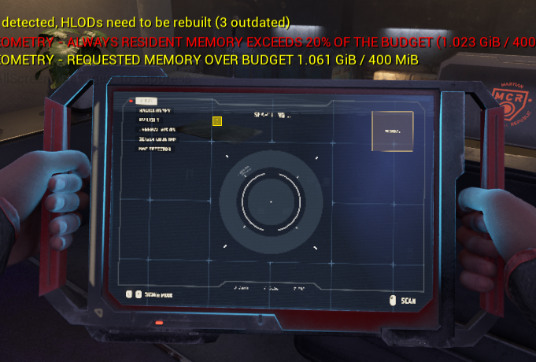
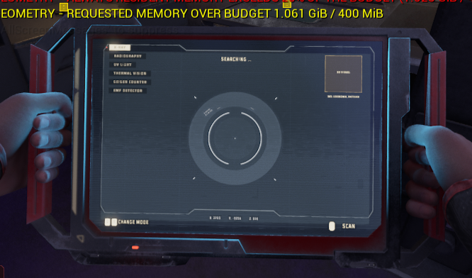

Нет фиксированного размера UI-текстуры
Контуры пересчитываются для текущего масштаба и проекции. Не приходится заранее выбирать разрешение render target для мелкого текста, крупных экранов или близкой камеры.
Векторная геометрия остаётся доступной до финального рендера: её можно масштабировать, анимировать, деформировать и выводить в UMG, world или decal через один backend.
Главное отличие SlugSvg — векторный контент не превращается в готовую картинку раньше времени.
Ниже собраны editor- и PIE-записи, на которых основаны выводы. Это отчёт о текущем состоянии реализации, а не описание завершённого универсального UI runtime.Обычный WidgetComponent сначала собирает экран в render target, после чего сцена видит только текстуру. Это универсальный путь, но форма элементов, текст и структура композиции к моменту world render уже потеряны.
SlugSvg дольше сохраняет исходное представление: UMG отвечает за layout, а renderer получает геометрию SVG и текста вместе с параметрами заливки и групповых преобразований.
Контуры пересчитываются для текущего масштаба и проекции. Не приходится заранее выбирать разрешение render target для мелкого текста, крупных экранов или близкой камеры.
Один и тот же контент можно вывести в UMG, напрямую в world или как decal. Lens, CameraGroup и Transform3D работают с композицией, а не с уже сплющенной картинкой.
Rigged SVG, material fills и текст могут оставаться отдельными элементами. WIP animation editor показывает направление к skeletal-like анимации SVG внутри UI pipeline.
Дизайнер продолжает собирать экран в UMG, а renderer получает больше информации и может применять операции, которые после rasterization потребовали бы отдельной текстуры, материала или специального pass.
Фотографии, scene feed, detector output и material/texture fills остаются растровыми там, где это естественно. SlugSvg нужен для тех частей UI, где полезно сохранить геометрию, текст и структуру композиции.
Slug-only виджет можно передать в world render path без предварительной отрисовки UI в текстуру. Для decal используется тот же подготовленный Slug-контент, но с проекцией на геометрию сцены.
Один тестовый контент показан как UMG-виджет, world entity и decal. На видео виден переход между этими тремя вариантами.
Исходный контент собран как обычный виджет.
Компонент и его геометрия доступны в редакторе сцены.
Slug-контент проецируется на поверхность сцены.
X-ray удобен как пример сложного UI: полупрозрачный фон, SVG-графика, текст, scanlines и внешнее содержимое detector можно собрать в одной Slug-композиции.
Это отдельный demo-виджет, который показывает применимость pipeline к такому классу экранов. Он не заменяет текущую реализацию scanner и не воспроизводит её 1:1.
Обе реализации можно включить через data asset и снять в одинаковых условиях. Сравнение помогает оценить общий состав, читаемость в движении и различие render paths — не pixel parity.


SLUG DEMOCURRENTБез render target работает Slug UI-слой. Изображение detector или scene feed по-прежнему может поступать как texture/material; переводить этот источник в векторный renderer не требуется.
Экран не обязан быть одним SVG. В одной UMG-иерархии можно сочетать rigged SVG, заливки текстурой или материалом, Slug Text и Rich Text. Каждый элемент остаётся отдельным настраиваемым виджетом.
Rig-анимация работает внутри обычной UMG-композиции.
Форма SVG используется как маска для texture brush или анимированного UI material.
Показаны кириллица, shaping, перенос строк, разные стили и inline runs. Текст рендерится внутри Slug pipeline.
UMG задаёт иерархию и размеры элементов.
SVG и текст дают геометрию покрытия.
Цвет, gradient, texture или UI material.
Lens и CameraGroup применяются к содержимому контейнера.
Lens — контейнер с одной screen-space деформацией для всех Slug-потомков. SVG, Slug Text, Rich Text и material/brush content получают одинаковые параметры без настройки каждого leaf widget.
CameraGroup задаёт камеру для содержимого контейнера. Transform3D хранит rotation и Z конкретного потомка. Эти параметры не меняют двумерный layout; перспектива отображается в UMG Designer.
CameraGroup и Transform3D сейчас поддержаны в UMG/Slate. Direct-world capture эти scopes не принимает: для него потребуется отдельно расширить world instance ABI.
Figma Import создаёт редактируемые UMG/Slug assets, дальнейшая сборка выполняется в UMG Designer. Atlas Viewer показывает содержимое atlas и декодированную геометрию во время отладки.
Результат импорта — набор редактируемых UMG/Slug assets, а не растрированный снимок экрана.
Atlas и декодированная геометрия доступны для проверки в редакторе.
Импортированная композиция остаётся редактируемой.
Результат открыт в обычном UMG Designer.
Figma используется как ориентир при сборке демонстрационного виджета.
Этот список отделяет показанные в записях сценарии от задач, которые ещё не закрыты.
Список не распространяет выводы за пределы показанных сценариев.
Эти задачи потребуются перед более широким production-применением.
Выбрать следующий world UI, на котором можно проверить повторное применение backend за пределами демонстрационного X-ray виджета.